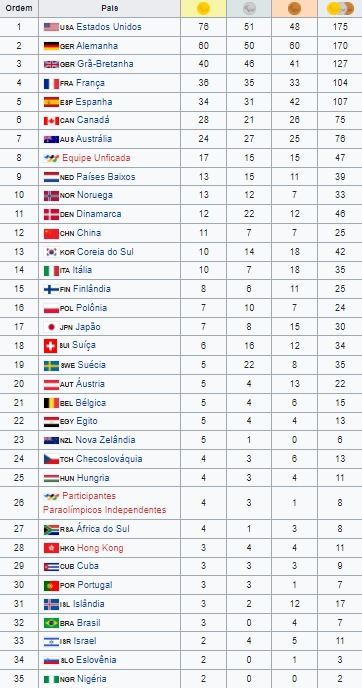

1992 Barcelona, EspanhaOs X Jogos Paraolímpicos foram realizados em Barcelona, na Espanha. O evento foi organizado pelo mesmo comitê organizador dos Jogos Olímpicos de Verão de 1992.Modalidades→Atletismo→Basquetebol →Bocha →Ciclismo →Elevação →Levantamento de peso →Halterofilismo →Esgrima →Futebol de 7 →Goalball →Hipismo →Lawn bowls →Lutas →Natação →Snooker →Tênis de mesa →Tiro com Arco →Tiro →Voleibol Medalhas |